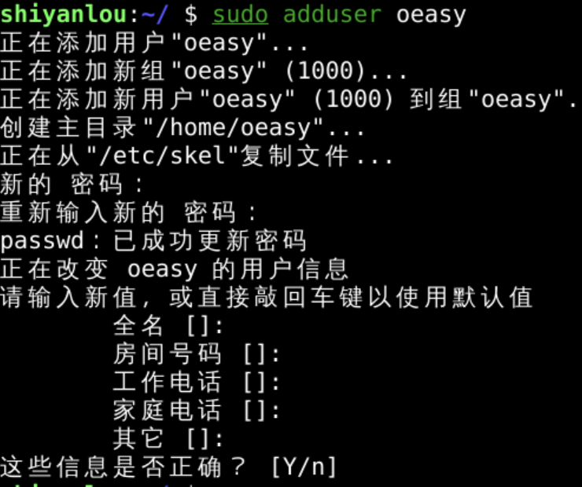
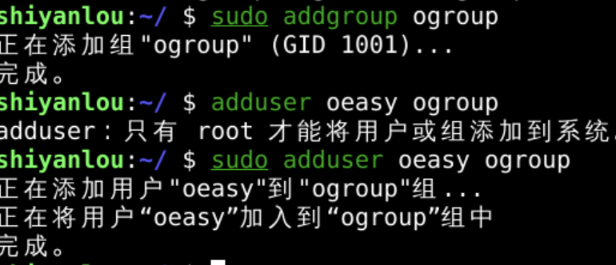
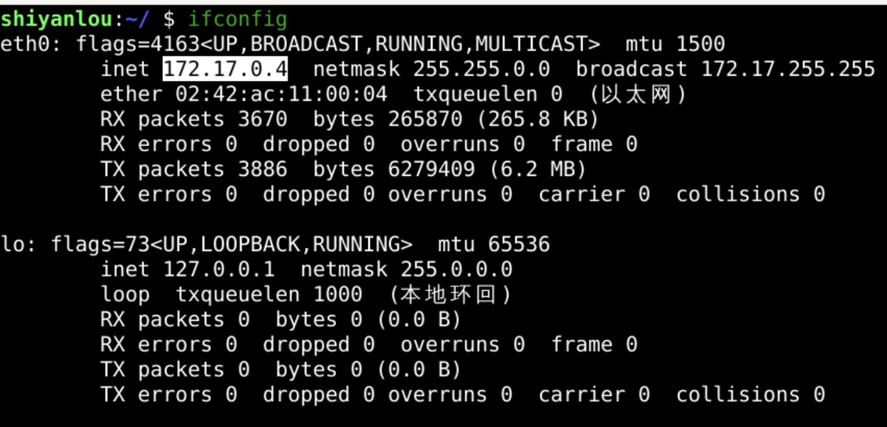
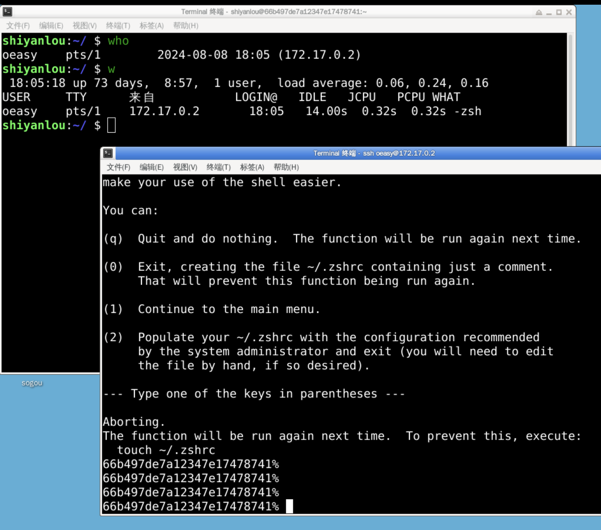
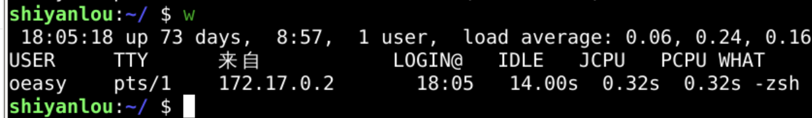
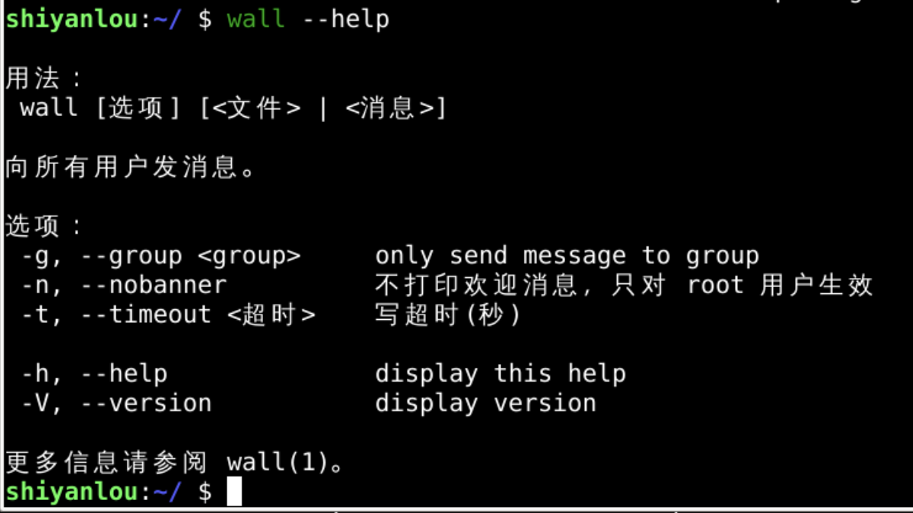
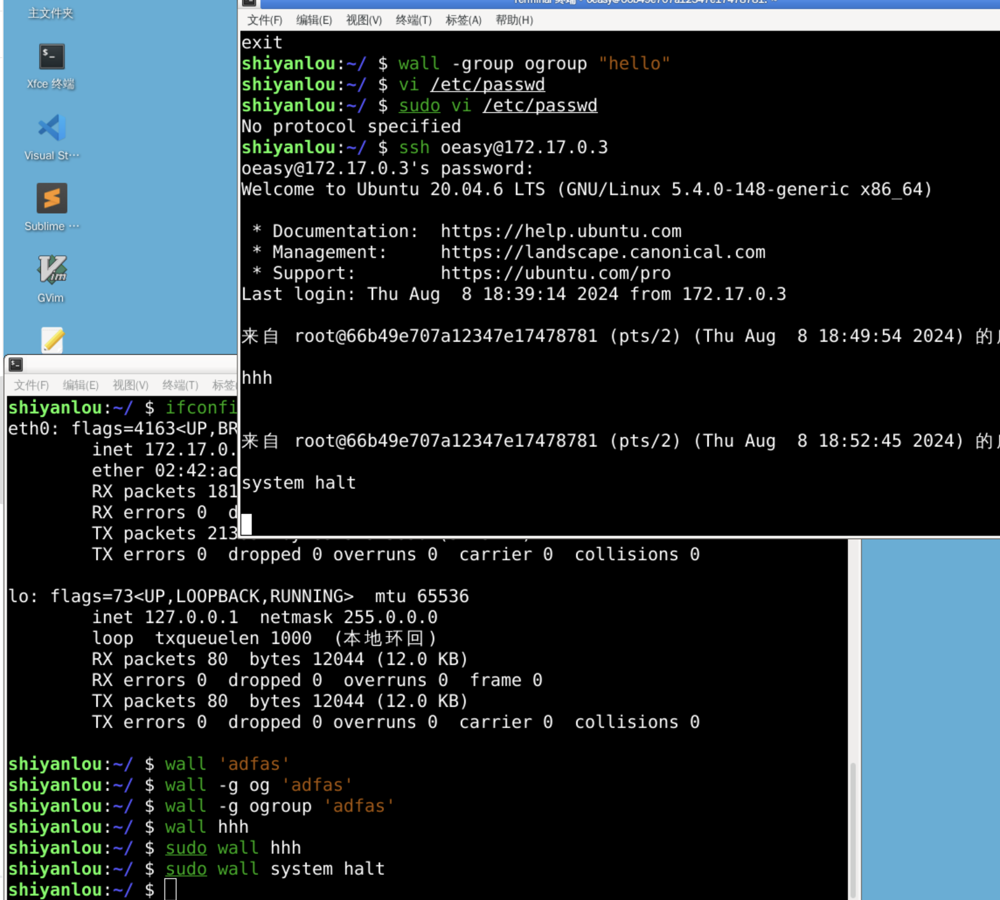

给用户组发消息(wall)
回忆
- 我们上次新建了组(group)
- addgroup
- 有addgroup就有delgroup

- 可以将用户放到用户组中
- add oeasy ogroup
- 我们可以用wall
- 给oeasy、o2z发消息吗？
查看ip
- 先新建用户oeasy

加入组

- 并将其加入ogroup
然后查看ip

登录用户
- 开两个终端
- 分别用oeasy、shiyanlou
- 登录本机ip

查看谁登陆
- 我们可以看到两个登录的用户

- 现在给他们发消息

wall
sudo wall system halt
sudo wall -g ogroup you are og
sudo wall -g oeasy you are oeasy
- 用管理员权限分别对三种类型的用户发消息
- 全体
- ogroup组成员
- oeasy用户

- 注意要有sudo权限
- 才能write to all
wall
- 这也是wall名字的由来

- 给所有人写消息
总结 🤨
- 这次我们研究了 wall 这个命令
- 这个命令可以给当前登录本服务的用户发消息
- 给指定某个组发消息
- 给指定的用户发消息
- 给所有用户发消息
- who可以查询到有哪些用户在线
- 为什么要有用户和用户组呢？
- 都用一个账号登录不是更简单吗？
- 这背后有什么样的考虑呢？🤔
- 先总结一下用户和用户组去
- 下次再说！👋